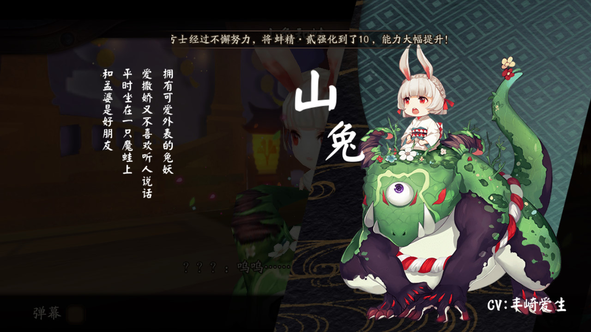

陰陽師手遊
讀取畫面
晴明

神樂

源博雅

八百比丘尼

章節標題
- 1第一章 雀食奇譚 九命貓
- 3第二章 幸福的彼岸 座敷童子
- 5第三章 鳳凰林的占卜師 鳳凰火
- 7第四章 橋上的雨女 雨女
- 9第五章 黑夜山的食髮鬼 食髮鬼
- 11第六章 似夢非夢 蝴蝶精
- 13第七章 愛上鯉的美 妖狐
- 15第八章 櫻與桃 桃花妖
- 17第九章 兔蛙茶和鍋
- 19第十章 鬼為誰買醉
- 21第十一章 染红了的枫叶林
- 23第十二章 另一个晴明
- 25第十三章 箭与弓道
- 27第十四章 梦境的邂逅
- 29第十五章 阴界裂缝
- 31第十六章 冥界审判
- 33第十七章 阴阳逆反
- 35第十八章 黑晴明
人物介紹
第一章
小白

神樂
犬神

九命貓

第二章
鬼使白
鬼使黑
座敷童子
第三章
鳳凰火
八百比丘尼

第四章
青蛙瓷器
雨女
第五章
源博雅
食髮鬼
第六章
源博雅
食髮鬼
第七章
河童
鯉魚精
妖狐
第八章
櫻花妖
桃花妖
第九章
山兔

孟婆
第十章
酒吞童子
茨木童子
第十一章
鬼女紅葉